Crypto
周日抽空做了一下这个比赛，前两个是做出来的，最后一个是赛后学习。
Easy Husky
内存取证题，husky_memory.rar
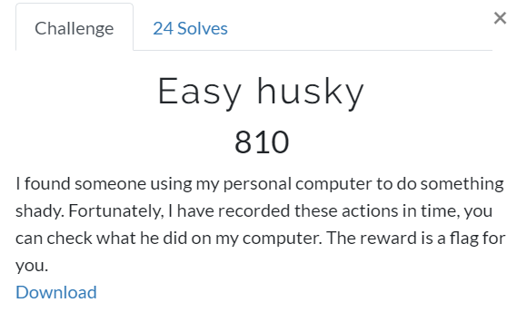
拿到内存文件之后，使用volatility进行分析，发现这是一个Windows XP的机器。经过一番搜索和常规操作之后，发现了一个假flag，没什么用。
继续进行取证，使用和malfind和cmdline命令，发现csrss.exe比较可疑，于是将后面的一长串命令进行google，找到下面的地址，发现这是一个木马的补救命令？https://www.trendmicro.com/vinfo/us/threat-encyclopedia/malware/troj_sirefef.bx
1 | C:\WINDOWS\system32\csrss.exe ObjectDirectory=\Windows SharedSection=1024,3072,512 Windows=On SubSystemType=Windows ServerDll=basesrv,1 ServerDll=winsrv:UserServerDllInitialization,3 ServerDll=winsrv:ConServerDllInitialization,2 ProfileControl=Off MaxRequestThreads=16 |
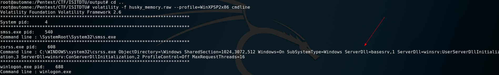
但是将该进程dump出来后没有发现flag相关的数据。
然后想到直接strings这个内存文件。
1 | strings husky_memory.raw | grep flag |
发现下图的可疑文件：
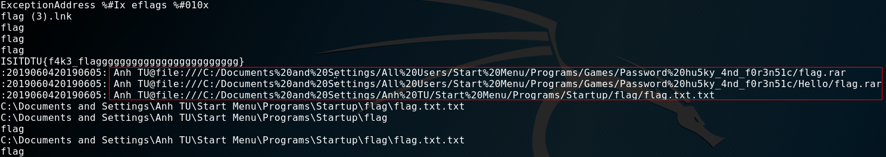
但是直接使用filescan去搜flag.rar是没有的
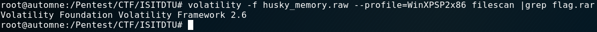
换个思路，去搜f0r3n51c，居然搜到了，文件地址：\Device\HarddiskVolume1\Documents and Settings\All Users\Start Menu\Programs\Games\hu5ky_4nd_f0r3n51c\f149999
基本可疑确定这就是flag文件。
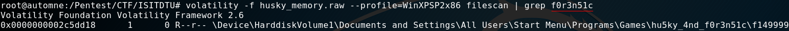
dump文件
1 | volatility -f husky_memory.raw --profile=WinXPSP2x86 dumpfiles -Q 0x0000000002c5dd18 -D output/ |
查看文件内容时发现这是个倒序的rar压缩包
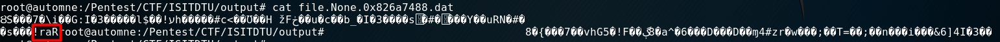
使用如下脚本进行处理：
1 | #encoding=utf-8 |
得到的压缩包是有密码的，但是上面已经给出了密码，hu5ky_4nd_f0r3n51c
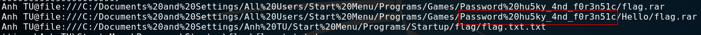
最终得到flag：
1 | ISITDTU{1_l0v3_huskyyyyyyy<3} |
Rose Garden
访问http://45.77.247.11/robots.txt发现源码
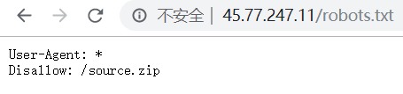
下载后审计flask源码，主要的check函数如下图

经过几番摸索，发现问题应该是对inet_aton()函数的绕过，google关键词：ctf inet_aton( bypass
最终找到下面的帖子
https://www.mehmetince.net/bypassing-django-defender-ip-based-trackban/
豁然开朗，根据代码的意思可以用0x7f.0x00.0x00.0x01来满足约束条件
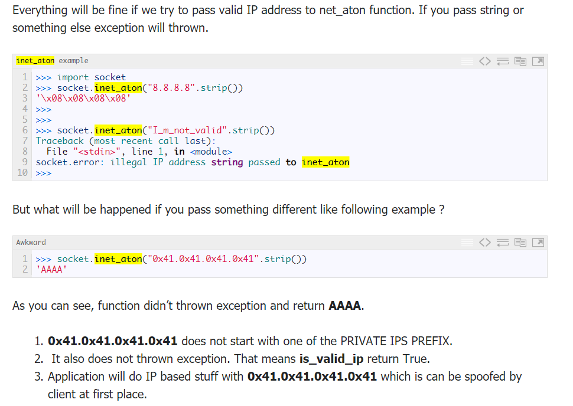
因为没有flask环境，本地的测试代码如下：
1 | #encoding=utf-8 python3 |
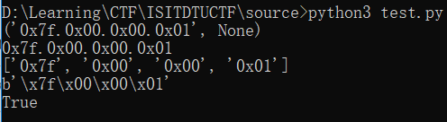
再结合源码里的端口，最终的payload:
1 | 0x7f.0x00.0x00.0x01:3333 |
得到flag:
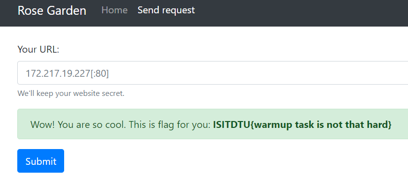
Easy_RSA_1
题目给出了公钥和密文
1 | n = 137709853388874260067664060306224801065880567280896538344708662296491187670268243771581008615887329285442080267493172576517227603581814922784005894668293664250883858847270414696279127204843462302026428548409668060539273696154323753582118715764251826181439387752900169898505518594134423187783089073450520527969 |
n是分解不了的，可以发现公钥指数e很大，首先想到了wiener attack，发现不行。
接着使用RsaCtfTool将所有攻击模式都跑了一遍，还是不行。
赛后看WriteUp才发现这是考察的boneh durfee attack
关于该攻击可参考：
https://www.cryptologie.net/article/265/small-rsa-private-key-problem/
https://github.com/mimoo/RSA-and-LLL-attacks
需要注意wiener attack适用于d<N0.25，而boneh durfee attack则适用于d<N0.292
实际上RsaCtfTool里已经收录了boneh durfee attack的攻击脚本
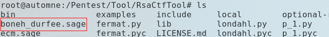
输入n和e后将会计算出私钥指数d
1 | sage boneh_durfee.sage 137709853388874260067664060306224801065880567280896538344708662296491187670268243771581008615887329285442080267493172576517227603581814922784005894668293664250883858847270414696279127204843462302026428548409668060539273696154323753582118715764251826181439387752900169898505518594134423187783089073450520527969 85605944479801539190292577400294315989703364683792339737453887619652946907819548388390076584246192710348319524405250340541547224543819349494488596679810310694697763188201375896240755682682520811114377302206659716598003967368992125832908158096663258971132148617761060030524535044970322206572134828548118438019 |
计算得到d
1 | 106354342195162244579308763693125372187924746644745144997173096990722844612139 |
RSA记住两个关键公式：
1 | c = pow(m,e,n) |
这里求出d之后，就是pow(c,d,n)求解明文了
使用sage求出明文的Decimal格式为
1 | 156621970655469965961841938763754494902728996846290367321712993647496350313417620357791022796993661 |
Decimal >> Hex >> Ascii后得到flag
1 | ISITDTU{Thank5_f0r_4tt3nd1ng_0ur_C0nt3st} |